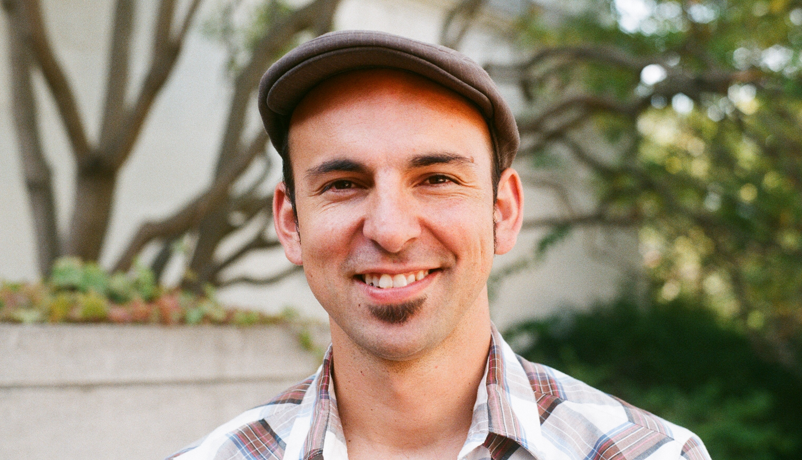

sfsu-colombia combinatorics initiative
san francisco state university
universidad de los andes
federico ardila
.
lo que hacemos .
what we do .
cursos .
videos .
papers .
people .
ecco .
press .
| 
|
Yo nací en Colombia, y fue allí donde me entusiasmé por las matemáticas. He vivido en Estados Unidos la mitad de mi vida, pero siempre me he mantenido en contacto cercano con Colombia y su comunidad matemática. Cuando terminé mi doctorado en combinatoria en el 2003, no había casi ninguna actividad en este campo en Colombia, y yo quería hacer algo al respecto. En el 2005 me vinculé a la Universidad Estatal de San Francisco, un departamento de matemáticas que hace cosas increíbles con un presupuesto muy bajo, cuya población estudiantil refleja el talento y la diversidad de California. Ha sido un gran placer trabajar con estos dos grupos a la vez.
Desde 2007 he dictado 5 cursos simultáneamente en SFSU y la Universidad de Los Andes en varias áreas de la combinatoria. Estudiantes de Berkeley también toman los cursos. He publicado unas 200 horas de videos, las notas de clase, tareas, y otros recursos para que cualquiera los pueda usar sin ningún costo. He tratado de que las clases sean accesibles a gente de distintos niveles de preparacion matemática. Aunque soy un poco escéptico de la "revolución tecnológica" educativa actual, también me entusiasman sus posibilidades; y sin duda me emociona descubrir gente que sigue mis clases con dedicación en Colombia, Estados Unidos, Palestina, Nicaragua, y Guyana, entre mucho otros.
Dicto la mayoría de mis clases en SFSU y las transmito por internet a Colombia, usando una tecnología artesanal de bajo costo, gracias a mi colega Arek Goetz. Visito Bogotá cada vez que puedo, y me reúno con los alumnos electrónicamente el resto del año. Los estudiantes hacen las (retadoras!) tareas juntos, discuten los temas del curso en un blog, y hacen proyectos finales en parejas, en temas que ellos escogen. Muchos grupos son internacionales. Muchos proyectos continúan cuando el semestre termina, y se convierten en artículos y tesis de grado.
Con alguna regularidad organizamos el Encuentro Colombiano de Combinatoria, donde participan estudiantes e investigadores de Colombia, SFSU y muchos otros lugares. Tenemos cursillos dictados por expertos internacionales, charlas de investigación, una o dos caminatas, y una visita a una de las legendarias salsotecas colombianas. Nos esforzamos por construir un ambiente muy profesional y muy acogedor. Somos colegas académicos, pero también somos una comunidad.
La iniciativa ha involucrado directamente a más de 100 estudiantes. Más de la mitad de ellos vienen de grupos demográficos con escasa representación en la comunidad matemática. Muchos participantes hacen carrera académica matemática. Muchos otros siguen siendo usuarios, entusiastas, y embajadores de la matemática en sus diversos campos: enseñanza, ingeniería, biología, planeación urbana, economía, y música, para nombrar unos cuantos. Tratamos de inculcar una visión de la matemática como una herramienta para bien de la sociedad. En particular, me entusiasma que muchos de nuestros participantes continúan trabajando con los jóvenes de sus comunidades en Colombia y en toda la Bahía de San Francisco.
Este proyecto está financiado por un premio CAREER de la National Science Foundation de los Estados Unidos, la Universidad Estatal de San Francisco, y la Universidad de Los Andes. Si está interesado en apoyar nuestro trabajo, no dude en contactarnos.
Federico Ardila
Associate Professor, San Francisco State University
Profesor Adjunto, Universidad de Los Andes
Visiting Professor, University of California, Berkeley